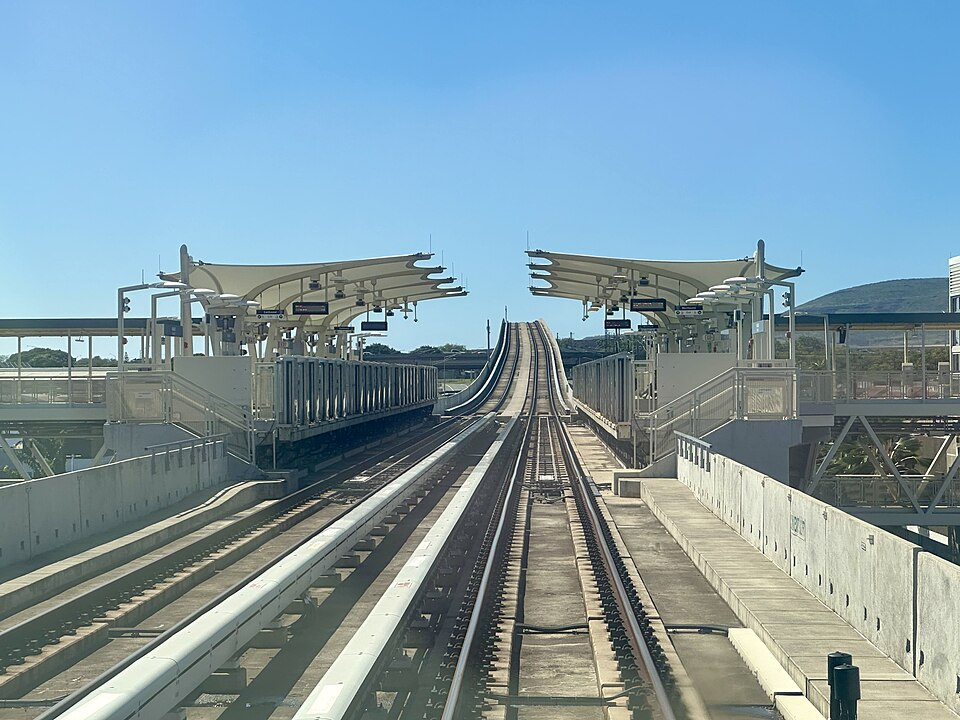

Hōʻaeʻae Rail Station
Place: Hōʻaeʻae Rail Station, Waipahu, Oʻahu
Type: Skyline rail station / West Loch station
Namesake: Hōʻaeʻae (“to make soft or fine”), the historic ahupuaʻa whose freshwater springs and fertile soils supported loʻi kalo
Story it tells: How an ʻEwa landscape of springs, ʻauwai, and loʻi kalo was transformed by sugar and urban development, while a modern Skyline station revives both the traditional name Hōʻaeʻae and the legacy of an earlier railroad station in the same corridor.

Hōʻaeʻae Rail Station, also known as West Loch Station, stands above Farrington Highway in Waipahu between Leoku and Leoole streets. The elevated station opened on June 30, 2023, as part of Skyline's first operating segment.
Hōʻaeʻae, meaning “to make soft or fine,” is the name of the traditional ahupuaʻa situated between Honouliuli and Waikele. The name has been connected with the preparation of its fertile soils, where abundant freshwater supported wetland agriculture. Springs bubbling across the lower lands near Puʻuloa (Pearl Harbor) provided water which was directed through ʻauwai into loʻi kalo.
The relationship between soil and water was fundamental to Hōʻaeʻae. Farmers worked the earth of the loʻi into the soft mud needed for kalo while maintaining a continuous, steady flow of water through the fields. Cultivated wetlands extended across portions of the lowlands surrounding the West Loch of Puʻuloa.
Hōʻaeʻae was also connected to the older geography of ʻEwa through places such as Huliwai Gulch. Hawaiian traditions describe Pōhaku-pili, or “clinging rock,” as a landmark along the boundary between Hōʻaeʻae and neighboring Waikele. The stone was associated with the gods Kāne and Kanaloa, connecting the physical boundary between the two lands with Hawaiian moʻolelo.
During the late nineteenth century, transportation and plantation agriculture began reshaping the area. In 1890, Benjamin Dillingham's Oʻahu Railway and Land Company extended its railroad through ʻEwa. A station named Hōʻaeʻae was established along the route, carrying the same place name used by today's Skyline station more than a century later.
The railroad supported the expanding sugar economy of the surrounding area. The Oahu Sugar Company began operations in nearby Waipahu in the late nineteenth century, and sugarcane increasingly replaced older agricultural landscapes across the surrounding ʻEwa plain. Plantation camps developed around the fields and mill as workers arrived from Japan, China, Portugal, the Philippines, and elsewhere, helping reshape the community that became modern Waipahu.
The OR&L railroad became particularly important during World War II, carrying military personnel, workers, equipment, and supplies through the Pearl Harbor region. After the war, automobiles and highways increasingly replaced rail transportation. OR&L abandoned its main line in 1947, ending railroad service through Hōʻaeʻae. Portions of the former right-of-way later became part of the Pearl Harbor Historic Trail.
Oahu Sugar Company continued operating until 1995, but development was already transforming Waipahu. Former agricultural lands became neighborhoods, roads, shopping centers, and businesses, leaving little visible evidence of the springs, loʻi, sugar fields, and railroad that had occupied the area.
More than a century after the first railroad reached Hōʻaeʻae, construction of Honolulu's elevated rail system returned trains to the corridor. During development of Skyline, the Hawaiian Station Naming Working Group researched traditional names associated with the route and recommended Hōʻaeʻae for the station originally identified as West Loch Station. The name was formally adopted in 2018.
When Hōʻaeʻae Rail Station opened in 2023, trains once again stopped at a place bearing the name Hōʻaeʻae. The technology had changed from narrow-gauge steam locomotives to an automated elevated railway, and the agricultural landscape surrounding it had largely disappeared, but the old name returned to Oʻahu's transportation network.
Hōʻaeʻae preserves the memory of a landscape shaped by freshwater, soft cultivated earth, and loʻi kalo before sugar, railroads, highways, and urban Waipahu repeatedly transformed the land. More than 130 years after the first Hōʻaeʻae railroad station, its name makes a return to the ʻEwa plains.